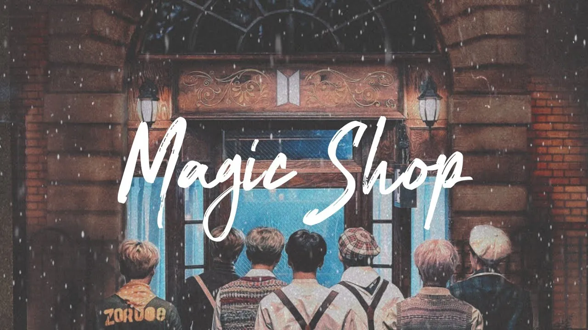
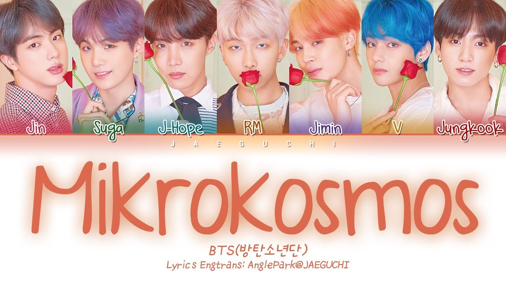

Magic Shop
“Magic Shop” is actually a track in BTS' third Korean studio album,
Love Yourself: Tear. This track was co-written and co-composed by Jung Kook. It describes Magic Shop as a
place of refuge for the heartbroken, a place of healing for the disturbed, and a place of love for those
who are lonely.

Mikrokosmos
Mikrokosmos: Microcosm means “small world,” and in the thought of the
Renaissance, it was applied specifically to human beings, who were considered to be small-scale models of
the universe, with all its variety and contradiction.